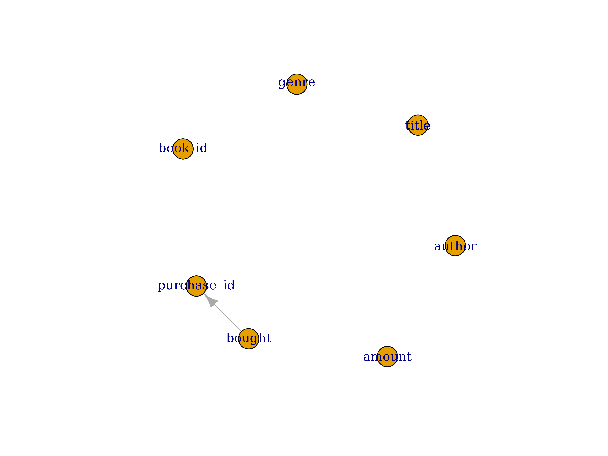
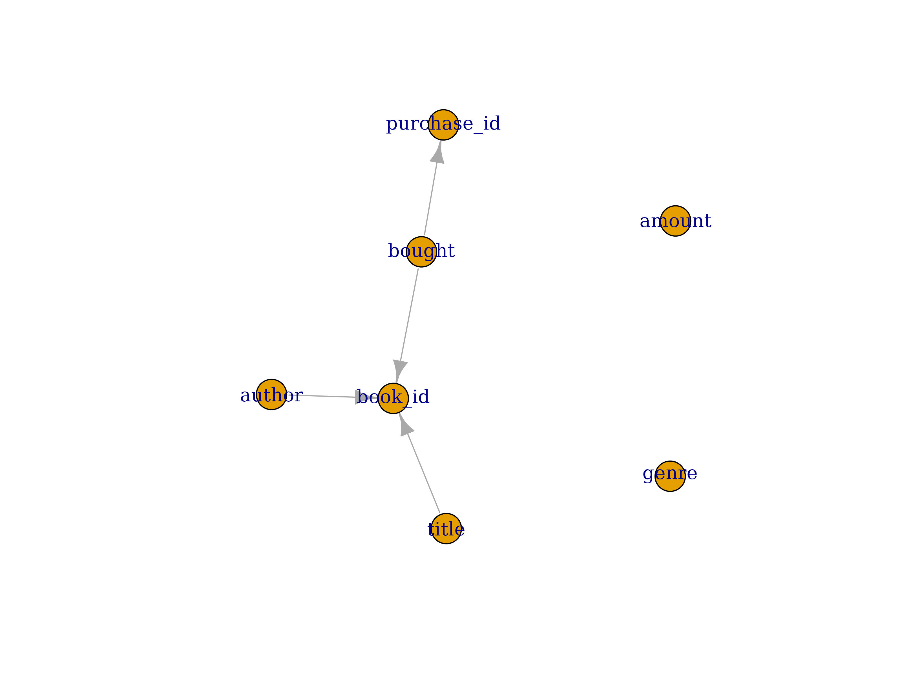

Simulation methods
Krystian Igras
2021-09-21
simulation_methods.RmdDataFakeR offers various methods for defining how exactly each column should be simulated.
We can highlight the below four simulation method types:
- Deterministic (formula or constraint-based) simulation.
- Special method simulation.
- Restricted simulation.
- Default simulation.
The package tries to simulate the column with each method, with preserving the order of the above list.
That means, the package will try to simulate the column using special method first and when such method cannot be executed (the conditions for running such method are not met) then, the next method is applied. More to that when one of the methods successfully generated the data, the following ones are skipped.
The goal of this document is to describe each method providing required details and, if applied, provide an information how each method can be customized.
Deterministic (formula or constraint-based) simulation.
Let’s imagine we want to generate tables that reflects standard database used in the library. One of the tables used there, can be the one describing all the books owned by the library.
The YAML configuration of such table can have a form:
# schema-books.yml
public:
tables:
books:
columns:
book_id:
type: char(12)
author:
type: varchar
title:
type: varchar
genre:
type: varchar
bought:
type: date
amount:
type: smallint
purchase_id:
type: varcharWhile running the standard simulation process we get the following result:
set.seed(123)
sch <- schema_source(system.file("extdata", "schema-books.yml", package = "DataFakeR"))
sch <- schema_simulate(sch)
schema_get_table(sch, "books")
#> # A tibble: 10 x 7
#> book_id author title genre bought amount purchase_id
#> <chr> <chr> <chr> <chr> <date> <int> <chr>
#> 1 OoVtwCbu QJoEYa XLaS xljCUY 1971-02-17 -28970 ZUYlCSp
#> 2 cXxXjdFu fRZxZuvf h dkvg 1982-12-06 -6823 rMSssP
#> 3 MCRxukhz VHwPDx TSbmLV WcDNUKrH 1999-06-19 -28513 H
#> 4 ikcePHyu lHcxeV NgJ pci 2018-07-04 -17965 kFBzBRvgOm
#> 5 jpBYnLQM hQQLTzI smigTbte IgQl 2012-03-14 -29188 rQZkhhyVGb
#> 6 HVVTHHMY E rQk Uyyl 1983-05-07 11159 L
#> 7 NsCWpGdK Hjguim NeZNdvuO NLeNbo 1996-09-13 -13255 ZTzULgHyaI
#> 8 GnuTiETO bi Q I 2016-05-26 -26167 g
#> 9 qXqqpWng q zgwYViH VYtwtjxadR 1994-08-08 -28056 ziVQrHKuQS
#> 10 kAYLTfSF oy dMyfaUt SBat 2010-05-15 24932 oKAVZEven though many columns don’t look realistic let’s take care of book_id and purchase_id columns. From the rules followed in the library, we know that:
-
book_idis the concatenation of first 4 letters fromauthor,titleandbought, -
purchase_idis concatenation of word ‘purchase_’ and columnbought(such rule is checked by SQLpurchase_id = 'purchase_' || boughtcheck constraint).
If we want to preserve such rules, we have two options:
- store the rules as
check_constraintsrewritten in R code, - define
book_idandpurchase_idusing formula.
Let’s describe purchase_id using the first method:
# schema-books_2.yml
public:
tables:
books:
columns:
book_id:
type: char(12)
author:
type: varchar
title:
type: varchar
genre:
type: varchar
bought:
type: date
amount:
type: smallint
purchase_id:
type: varchar
check_constraints:
purchase_id_check:
column: purchase_id
expression: !expr purchase_id == paste0('purchase_', bought)let’s update the source and plot column dependencies:
sch <- schema_update_source(sch, file = system.file("extdata", "schema-books_2.yml", package = "DataFakeR"))
schema_plot_deps(sch, "books")
As you can see DataFakeR detected dependency between purchase_id and bought column. More to that the package will assure bought column will be simulated before purchase_id.
Let’s take a quick look at the data:
sch <- schema_simulate(sch)
schema_get_table(sch, "books")
#> # A tibble: 10 x 7
#> book_id author title genre bought amount
#> <chr> <chr> <chr> <chr> <date> <int>
#> 1 KZRpDRUS bVnNsuEksi JKxINeIhK LkFH 2020-06-11 -13344
#> 2 jiJcVUeV noTSZCjx bRdd VhBHNl 1973-08-08 -24281
#> 3 CfOjSusR mICawvE OMue WF 2017-08-07 -8661
#> 4 wvBDkNJE UAyrAD ZnCggoUL T 2007-09-12 -1893
#> 5 ngSilEFa ZVrEkB hXdmHbG abvIVVXBv 1985-10-16 -31085
#> 6 xJdjADgp dRqmjgdN eKbsdjZ nyuzTSo 1979-04-13 -4147
#> 7 zZxHxYIU BZrXkZX xHVdgQrw HamKiXu 1985-06-29 26178
#> 8 qSzDjOOW RBhe uPcdqBdNjK P 2011-09-08 -17948
#> 9 oDsgMvoo HShhTST JuYWecgg dBddwjd 1977-01-01 -29141
#> 10 MLuNjQjl vnHRMIyFD HPnghwfmI InPjGZE 2001-06-28 -12128
#> purchase_id
#> <chr>
#> 1 purchase_2020-06-11
#> 2 purchase_1973-08-08
#> 3 purchase_2017-08-07
#> 4 purchase_2007-09-12
#> 5 purchase_1985-10-16
#> 6 purchase_1979-04-13
#> 7 purchase_1985-06-29
#> 8 purchase_2011-09-08
#> 9 purchase_1977-01-01
#> 10 purchase_2001-06-28As we can see check constraint rule was applied to correctly create purchase_id column.
Note: Check constraint expressions are used to detect column dependency and to create the checked column, only when the ones are equality expressions (that means the expression contains == operator). Such expression assures the column definition is deterministic. In the future releases (depending on the user’s needs) the check expression rule can be extended to the cases where expression constains < and > operators.
Now let’s take care to assure that book_id is the first 8 letters of concatenation of author, title and bought-year. Such example can be also described using check constraint, but we’ll use a different method that opens various options for defining column rules.
If you want to create a column using custom expression, you pass it as a formula parameter in yaml configuration file. In our case, we want book_id be created with expression paste0(substr(author, 1, 4), substr(title, 1, 4), substr(bought, 1, 4)). Let’s put it in configuration as formula parameter:
# schema-books_3.yml
public:
tables:
books:
columns:
book_id:
type: char(12)
formula: !expr paste0(substr(author, 1, 4), substr(title, 1, 4), substr(bought, 1, 4))
author:
type: varchar
title:
type: varchar
genre:
type: varchar
bought:
type: date
amount:
type: smallint
purchase_id:
type: varchar
check_constraints:
purchase_id_check:
column: purchase_id
expression: !expr purchase_id == paste0('purchase_', bought)Again, update the source and plot column dependencies:
sch <- schema_update_source(sch, file = system.file("extdata", "schema-books_3.yml", package = "DataFakeR"))
schema_plot_deps(sch, "books")
The column dependencies are detected correctly. Let’s move then to simulation step:
sch <- schema_simulate(sch)
schema_get_table(sch, "books")
#> # A tibble: 10 x 7
#> book_id author title genre bought amount
#> <chr> <chr> <chr> <chr> <date> <int>
#> 1 MswCZY1986 MswCQq ZY y 1986-06-29 22762
#> 2 GTzWEhJM1979 GTzWPPdY EhJM ayYLMBSyk 1979-12-19 -24661
#> 3 rdjCa2020 rdjCWK a jqEqKPHKcB 2020-07-28 -23651
#> 4 KjBXXHIP2001 KjBXmcV XHIPl UDvM 2001-07-10 -23590
#> 5 TUucM2000 TUucakYr M yuqFZJt 2000-04-21 24526
#> 6 nTzOJfTy1977 nTzO JfTyRcdMRE CLiN 1977-02-18 27014
#> 7 kctRFFfv2015 kctR FFfvoY AatWBL 2015-11-22 228
#> 8 KxtD2012 K xtD ohENWtGS 2012-07-19 31943
#> 9 qbt2001 qb t bSWYivOlPh 2001-01-06 -27890
#> 10 nQNqvwHC1976 nQNqxc vwHCWAFa H 1976-12-09 -1163
#> purchase_id
#> <chr>
#> 1 purchase_1986-06-29
#> 2 purchase_1979-12-19
#> 3 purchase_2020-07-28
#> 4 purchase_2001-07-10
#> 5 purchase_2000-04-21
#> 6 purchase_1977-02-18
#> 7 purchase_2015-11-22
#> 8 purchase_2012-07-19
#> 9 purchase_2001-01-06
#> 10 purchase_1976-12-09As we can see the result is again as expected.
Note The formula expression is passed to dplyr::mutate in the implementation, which means you may use in the formula any dplyr-specific functions, such as n().
Note Formula-based column definition was classified as a ‘Deterministic simulation’ method, but you may also define formulas with random sampling inside. For example assuring that column end_date have values larger than start_date you may define: formula: start_date + sample(1:10, dplyr::n(), replace = TRUE).
Special method simulation
Let’s take a look at the last simulated data:
schema_get_table(sch, "books")
#> # A tibble: 10 x 7
#> book_id author title genre bought amount
#> <chr> <chr> <chr> <chr> <date> <int>
#> 1 MswCZY1986 MswCQq ZY y 1986-06-29 22762
#> 2 GTzWEhJM1979 GTzWPPdY EhJM ayYLMBSyk 1979-12-19 -24661
#> 3 rdjCa2020 rdjCWK a jqEqKPHKcB 2020-07-28 -23651
#> 4 KjBXXHIP2001 KjBXmcV XHIPl UDvM 2001-07-10 -23590
#> 5 TUucM2000 TUucakYr M yuqFZJt 2000-04-21 24526
#> 6 nTzOJfTy1977 nTzO JfTyRcdMRE CLiN 1977-02-18 27014
#> 7 kctRFFfv2015 kctR FFfvoY AatWBL 2015-11-22 228
#> 8 KxtD2012 K xtD ohENWtGS 2012-07-19 31943
#> 9 qbt2001 qb t bSWYivOlPh 2001-01-06 -27890
#> 10 nQNqvwHC1976 nQNqxc vwHCWAFa H 1976-12-09 -1163
#> purchase_id
#> <chr>
#> 1 purchase_1986-06-29
#> 2 purchase_1979-12-19
#> 3 purchase_2020-07-28
#> 4 purchase_2001-07-10
#> 5 purchase_2000-04-21
#> 6 purchase_1977-02-18
#> 7 purchase_2015-11-22
#> 8 purchase_2012-07-19
#> 9 purchase_2001-01-06
#> 10 purchase_1976-12-09As we mentioned in the previous section, we’re not happy with the result of multiple column values. In this section we’ll take of the result of author and title columns.
In case of author column, we’d like the values to be random, human readable names. Across R packages, there are many that offer such functionality. In case of DataFakeR, it’s just enough to define spec: name for the column definition:
# schema-books_4.yml
public:
tables:
books:
columns:
book_id:
type: char(12)
formula: !expr paste0(substr(author, 1, 4), substr(title, 1, 4), substr(bought, 1, 4))
author:
type: varchar
spec: name
title:
type: varchar
genre:
type: varchar
bought:
type: date
amount:
type: smallint
purchase_id:
type: varchar
check_constraints:
purchase_id_check:
column: purchase_id
expression: !expr purchase_id == paste0('purchase_', bought)Again, update the source and plot column dependencies:
sch <- schema_update_source(sch, file = system.file("extdata", "schema-books_4.yml", package = "DataFakeR"))
sch <- schema_simulate(sch)
schema_get_table(sch, "books")
#> # A tibble: 10 x 7
#> book_id author title genre bought amount
#> <chr> <chr> <chr> <chr> <date> <int>
#> 1 TavaDHD1987 Tavaris Dicki DHD qa 1987-03-31 26032
#> 2 Hughbsga2014 Hugh Corkery bsgaYOA Fa 2014-12-04 -26637
#> 3 ParaMj1979 Paralee King Mj TVmrO 1979-11-03 -6062
#> 4 NakiAXfY1988 Nakita Kris AXfYXEsbQs oafcJ 1988-02-22 24840
#> 5 ClaurIfI1989 Claudine Russel rIfIoVBfr xGLmoTO 1989-06-01 9224
#> 6 DejaXovv1996 Dejah Pagac MD Xovv yUiYW 1996-10-15 15407
#> 7 IoneKYqH2006 Ione Tromp PhD KYqHNX gvcQQhZofQ 2006-03-14 22101
#> 8 KaraRo1997 Karan King DDS Ro iwEgV 1997-02-16 -23947
#> 9 AnitTqbv1970 Anita Langworth TqbvVYHxP zyBO 1970-03-14 -30646
#> 10 Mrs.LVAc1992 Mrs. Mettie Berge LVAcejZn XbPrRF 1992-07-05 28197
#> purchase_id
#> <chr>
#> 1 purchase_1987-03-31
#> 2 purchase_2014-12-04
#> 3 purchase_1979-11-03
#> 4 purchase_1988-02-22
#> 5 purchase_1989-06-01
#> 6 purchase_1996-10-15
#> 7 purchase_2006-03-14
#> 8 purchase_1997-02-16
#> 9 purchase_1970-03-14
#> 10 purchase_1992-07-05Voila!
How does it work?
Whenever you precise spec parameter to the column, DataFakeR will look for the simulation options if the special method with such name was defined. For the specific column type, such option is defined at options$opt_simul_spec_<column-type>.
So for the default options and character column type, we have:
default_faker_opts$opt_simul_spec_character
#> $name
#> function (n, not_null, unique, default, spec_params, na_ratio,
#> levels_ratio, ...)
#> {
#> call_args <- names(sys.call())
#> if (!"spec_params" %in% call_args) {
#> spec_params <- list()
#> }
#> spec_params$n <- n
#> unique_sample(do.call(charlatan::ch_name, spec_params), spec_params = spec_params,
#> unique = unique) %>% levels_rand(unique = unique, levels_ratio = levels_ratio) %>%
#> na_rand(not_null = not_null, na_ratio = na_ratio)
#> }
#> <bytecode: 0x55812764e9f8>
#> <environment: namespace:DataFakeR>The name method was defined and we were able to use it in the simulation. Looking at the function body, we may see it uses charlatan::ch_name function to simulate human-readable names.
What else can we spot regarding the method definition? The below points are worth notice:
- the method have
nparameter. This is obligatory parameter for each simulation method. - the method parameters also contain standard column ones from YAML file. Whenever you need access to column parameters, just define them while creating the method. DataFakeR passes all the column parameters (not only the default ones) to each method.
- if the parameter is not directly defined in the function it’s still possible to access all of them by parsing ellipsis (…). Please make sure ellipsis is always added as a function parameter.
- by defining
spec_paramsyaml configuration parameter you may access and parse them directly in the method definition. Such parameter allows to resolve conflicts with standard parameters names when duplication exist.
Now, let’s take care of preparing human-readable title. For this case we’ll create our custom function. The titles will consist of combination of four words from predefined values:
books <- function(n) {
first <- c("Learning", "Amusing", "Hiding", "Symbols", "Hunting", "Smile")
second <- c("Of", "On", "With", "From", "In", "Before")
third <- c("My", "Your", "The", "Common", "Mysterious", "A")
fourth <- c("Future", "South", "Technology", "Forest", "Storm", "Dreams")
paste(sample(first, n), sample(second, n), sample(third, n), sample(fourth, n))
}Let’s check a few possible results:
books(3)
#> [1] "Hiding In Common Technology" "Learning On The Future"
#> [3] "Amusing From Your Storm"Perfect!
In order to present how spec_params can be used let’s add an option to skip the second word in the result:
books <- function(n, add_second = FALSE) {
first <- c("Learning", "Amusing", "Hiding", "Symbols", "Hunting", "Smile")
second <- c("Of", "On", "With", "From", "In", "Before")
third <- c("My", "Your", "The", "Common", "Mysterious", "A")
fourth <- c("Future", "South", "Technology", "Forest", "Storm", "Dreams")
second_res <- NULL
if (add_second) {
second_res <- sample(second, n, replace = TRUE)
}
paste(
sample(first, n, replace = TRUE), second_res,
sample(third, n, replace = TRUE), sample(fourth, n, replace = TRUE)
)
}Now, let’s create the final method to use in the workflow.
The function needs to:
- take
nparameter, - optional standard parameter
unique(we’ll use it to assure unique results are returned), -
spec_paramsthat allows us to modify special method parameters
simul_spec_character_book <- function(n, unique, spec_params, ...) {
spec_params$n <- n
DataFakeR::unique_sample(
do.call(books, spec_params),
spec_params = spec_params, unique = unique
)
}Before we run the example, let’s explain code blocks in function definition.
We’re evaluating books using do.call. That’s why we need to store all the parameters in the list passed to do.call. The only missing one is n, so:
spec_params$n <- nWe allowed our method to respect unique parameter, that’s why we want to assure the returned sample is unique. We may achieve this using DataFakeR::unique_sample.
The function evaluates sampling expression multiple times, replacing duplicated values with the new ones. It’s worth to mention some of the function parameters:
-
sim_expr- simulation expression to be evaluated, -
...- parameters values used insim_expr, -
unique- if TRUE, the function will try to generate unique values, -
n_iter- number of iteration to try generate unique value.
So it’s enough to define:
DataFakeR::unique_sample(
sim_expr = do.call(books, spec_params),
spec_params = spec_params, unique = unique
)Let’s modify configuration file with the book method (with using spec_params to simulate full title):
schema-books_5.yml
public:
tables:
books:
columns:
book_id:
type: char(8)
formula: !expr paste0(substr(author, 1, 4), substr(title, 1, 4), substr(bought, 1, 4))
author:
type: varchar
spec: name
title:
type: varchar
spec: book
spec_params:
add_second: true
genre:
type: varchar
bought:
type: date
amount:
type: smallint
purchase_id:
type: varchar
check_constraints:
purchase_id_check:
column: purchase_id
expression: !expr purchase_id == paste0('purchase_', bought)and define the new method in the package options:
my_opts <- set_faker_opts(
opt_simul_spec_character = opt_simul_spec_character(book = simul_spec_character_book)
)
sch <- schema_source(
system.file("extdata", "schema-books_5.yml", package = "DataFakeR"),
faker_opts = my_opts
)
sch <- schema_simulate(sch)
schema_get_table(sch, "books")
#> # A tibble: 10 x 7
#> book_id author title
#> <chr> <chr> <chr>
#> 1 ChriLear1984 Christy Block Learning With Mysterious Storm
#> 2 CarrLear1998 Carrie McDermott Learning From My South
#> 3 DevoSymb2016 Devonte Hansen Symbols From Mysterious Dreams
#> 4 AleaSmil2017 Alease Pouros Smile On Common Storm
#> 5 HarvHunt1976 Harvey Bogisich-Leuschke Hunting Before Your Technology
#> 6 VersAmus1977 Versie Rowe Amusing From Common South
#> 7 Ica Hunt1978 Ica Flatley Hunting With A Dreams
#> 8 BeniLear1990 Benito Franecki Learning With My Future
#> 9 Dr. Smil1982 Dr. Saverio Heller IV Smile In Your Future
#> 10 LeonLear2020 Leonel Ebert Learning With The Future
#> genre bought amount purchase_id
#> <chr> <date> <int> <chr>
#> 1 I 1984-09-28 -18916 purchase_1984-09-28
#> 2 fkYodnYtmP 1998-10-08 6322 purchase_1998-10-08
#> 3 dY 2016-05-23 -14514 purchase_2016-05-23
#> 4 wbRSqpcXz 2017-05-21 -5896 purchase_2017-05-21
#> 5 QaWcKSzAC 1976-03-21 -16899 purchase_1976-03-21
#> 6 BJXEbeMFm 1977-12-30 -3695 purchase_1977-12-30
#> 7 VvGxeAppvr 1978-11-30 20402 purchase_1978-11-30
#> 8 enFtPWKUfr 1990-03-12 20058 purchase_1990-03-12
#> 9 uM 1982-09-22 -1565 purchase_1982-09-22
#> 10 dqP 2020-01-29 30320 purchase_2020-01-29Great! We’ve managed to use our custom special method to simulate human-readable titles.
For the last part of this section it’s worth to mention the remaining special methods for each column type. For numeric, integer, logical and Date column classes, DataFakeR offer spec: distr method that allow to simulate column from the selected distribution. The method requires to provide:
spec_params:
method: <method-name>where method name is the name of simulation function such as rnorm, rbinom etc.
For example, in order to simulate the column from normal distribution with mean = 10 and sd = 5 we should define:
spec: distr
spec_params:
method: rnorm
mean: 10
sd: 5Restricted simulation
Restricted simulation methods allow to simulate data considering exceptional parameters defined for each column.
Such parameters can be for example:
-
values- possible column values for the target column -
range- possible column values range for the target column
All the restricted methods offered by DataFakeR for column type are defined in default_faker_opts$opt_simul_restricted_<column-type>.
Let’s take a look what methods are offered for integer columns:
default_faker_opts$opt_simul_restricted_integer
#> $f_key
#> function (n, not_null, unique, default, type, values, na_ratio,
#> levels_ratio, ...)
#> {
#> if (isTRUE(not_null)) {
#> values <- values[!is.na(values)]
#> }
#> if (isTRUE(unique)) {
#> warning("Requested to simulate foreign key having unique values. Make sure config is correctly defined.")
#> }
#> sample(values, n, replace = !unique) %>% na_rand(not_null = not_null,
#> na_ratio = na_ratio)
#> }
#> <bytecode: 0x5581276381d8>
#> <environment: namespace:DataFakeR>
#>
#> $in_set
#> function (n, not_null, unique, default, type, values, na_ratio,
#> levels_ratio, ...)
#> {
#> if (!missing(values)) {
#> if (isTRUE(not_null)) {
#> values <- values[!is.na(values)]
#> }
#> return(sample(values, n, replace = !unique) %>% na_rand(not_null = not_null,
#> na_ratio = na_ratio))
#> }
#> return(NULL)
#> }
#> <bytecode: 0x558127639198>
#> <environment: namespace:DataFakeR>
#>
#> $range
#> function (n, not_null, unique, default, type, range, na_ratio,
#> levels_ratio, ...)
#> {
#> if (!missing(range)) {
#> return(unique_sample(round(stats::runif(n, range[1],
#> range[2])), range = range, n = n, unique = unique) %>%
#> na_rand(not_null = not_null, na_ratio = na_ratio))
#> }
#> return(NULL)
#> }
#> <bytecode: 0x558127635b58>
#> <environment: namespace:DataFakeR>We can see there are three methods defined:
-
f_key- restricted method responsible for simulating foreign keys (we’ll come back to this one in the last part of the section), -
range- method takingrangeparameter. Whenrangeis missingNULLis returned, otherwise integers betweenrange[1]andrange[2]are returned, -
in_set- method takingvaluesparameter. Whenvaluesis missingNULLis returned, otherwise sampled values fromvaluesare returned.
Let’s highlight the general rule for restricted methods used by the package (excluding f_key one):
- each method has
nas obligatory parameter that determines number of returned values, - standard column parameters (
not_null,unique,type) are optional but respected, - the method usually have defined ‘restriction’ parameter that determines whether the method should be applied or not,
- when restriction condition is not met (for example ‘restriction’ parameter is missing) the method should return
NULL.
The last point allows DataFakeR to scan across all the restriction methods. When a method returns NULL result, the package moves to simulate from the next method defined in opt_simul_restricted_<column-type> setting.
Similar to special methods, you may also define a set of your custom restricted methods. You may achieve this by setting up new methods with:
set_faker_opts(
opt_simul_restricted_<column-type> = opt_simul_restricted_<column-type>(my_method = method, ...)
)Note: DataFakeR allow also to rewrite currently existing method. So whenever you need to rewrite for example in_set method, just specify it as above.
Having the knowledge about restricted methods, let’s use them to generate amount column from values between 1 and 99. We’ll do it by using range method for amount column:
# schema-books_6.yml
public:
tables:
books:
columns:
book_id:
type: char(8)
formula: !expr paste0(substr(author, 1, 4), substr(title, 1, 4), substr(bought, 1, 4))
author:
type: varchar
spec: name
title:
type: varchar
spec: book
spec_params:
add_second: true
genre:
type: varchar
bought:
type: date
amount:
type: smallint
range: [1, 99]
purchase_id:
type: varchar
check_constraints:
purchase_id_check:
column: purchase_id
expression: !expr purchase_id == paste0('purchase_', bought)
sch <- schema_update_source(sch, system.file("extdata", "schema-books_6.yml", package = "DataFakeR"))
sch <- schema_simulate(sch)
schema_get_table(sch, "books")
#> # A tibble: 10 x 7
#> book_id author title genre
#> <chr> <chr> <chr> <chr>
#> 1 MattLear2021 Matteo Wilderman Learning With Common Storm bTy
#> 2 Dr. Symb1977 Dr. Reyna Effertz Symbols Of The Storm qsEyoRjRQT
#> 3 Ms. Lear1989 Ms. Reva Stehr DVM Learning On Mysterious Dreams gnTyui
#> 4 Dr. Amus1980 Dr. Tabetha Ferry Amusing From Common Dreams nThgzToW
#> 5 MeyeHunt1978 Meyer Stamm-Hintz Hunting From Mysterious Storm VIacj
#> 6 LottAmus2015 Lottie Smith Amusing Before My South RZII
#> 7 VoneHunt2020 Vonetta Halvorson Hunting Before Common Storm apjhWhUYV
#> 8 WainHunt1971 Waino Barton Hunting On Mysterious Storm ErPnM
#> 9 CanyAmus2018 Canyon Bogan Amusing In A Dreams ZuJnbzFes
#> 10 JadeAmus2004 Jaden Muller DDS Amusing In My Technology QhiwnsVjZQ
#> bought amount purchase_id
#> <date> <int> <chr>
#> 1 2021-01-23 24 purchase_2021-01-23
#> 2 1977-02-04 45 purchase_1977-02-04
#> 3 1989-11-10 27 purchase_1989-11-10
#> 4 1980-08-13 12 purchase_1980-08-13
#> 5 1978-03-04 8 purchase_1978-03-04
#> 6 2015-06-21 42 purchase_2015-06-21
#> 7 2020-03-13 30 purchase_2020-03-13
#> 8 1971-12-30 87 purchase_1971-12-30
#> 9 2018-08-07 27 purchase_2018-08-07
#> 10 2004-04-06 57 purchase_2004-04-06Awesome! Let’s simulate now human-readable book genre from a set of defined values. We can achieve this using in_set method for character column type:
default_faker_opts$opt_simul_restricted_character$in_set
#> function (n, not_null, unique, default, nchar, type, values,
#> na_ratio, levels_ratio, ...)
#> {
#> if (!missing(values)) {
#> if (isTRUE(not_null)) {
#> values <- values[!is.na(values)]
#> }
#> return(sample(values, n, replace = !unique) %>% na_rand(not_null = not_null,
#> na_ratio = na_ratio))
#> }
#> return(NULL)
#> }
#> <bytecode: 0x55812764d2b8>
#> <environment: namespace:DataFakeR>So let’s assume we want the genre to be simulated from set: Fantasy, Adventure, Horror, Romance.
Let’s define such set as possible values for genre column:
schema-books_7.yml
public:
tables:
books:
columns:
book_id:
type: char(8)
formula: !expr paste0(substr(author, 1, 4), substr(title, 1, 4), substr(bought, 1, 4))
author:
type: varchar
spec: name
title:
type: varchar
spec: book
spec_params:
add_second: true
genre:
type: varchar
values: [Fantasy, Adventure, Horror, Romance]
bought:
type: date
amount:
type: smallint
range: [1, 99]
purchase_id:
type: varchar
check_constraints:
purchase_id_check:
column: purchase_id
expression: !expr purchase_id == paste0('purchase_', bought)
sch <- schema_update_source(sch, system.file("extdata", "schema-books_7.yml", package = "DataFakeR"))
sch <- schema_simulate(sch)
schema_get_table(sch, "books")
#> # A tibble: 10 x 7
#> book_id author title
#> <chr> <chr> <chr>
#> 1 GeorHunt1999 George O'Conner Hunting Before Mysterious Technology
#> 2 DevoHidi2020 Devonte McClure Hiding Of The Forest
#> 3 ConaSmil1994 Conard Volkman-Walker Smile Of The Dreams
#> 4 EloyHidi1975 Eloy Ratke III Hiding Before Common Future
#> 5 PhoeSmil2019 Phoebe Swaniawski Smile Of My Forest
#> 6 AdelSmil1982 Adeline Block PhD Smile From Common South
#> 7 Dr. Hunt1975 Dr. Albin Reinger Hunting From A Forest
#> 8 MoirSymb1997 Moira Lebsack Symbols From A Future
#> 9 KeilSmil2002 Keila Gleichner PhD Smile With A Dreams
#> 10 AlexLear1998 Alexus Bogisich Learning In Common South
#> genre bought amount purchase_id
#> <chr> <date> <int> <chr>
#> 1 Adventure 1999-12-14 24 purchase_1999-12-14
#> 2 Fantasy 2020-02-18 46 purchase_2020-02-18
#> 3 Horror 1994-06-04 57 purchase_1994-06-04
#> 4 Adventure 1975-06-09 40 purchase_1975-06-09
#> 5 Romance 2019-06-17 10 purchase_2019-06-17
#> 6 Romance 1982-02-11 23 purchase_1982-02-11
#> 7 Fantasy 1975-05-07 73 purchase_1975-05-07
#> 8 Horror 1997-02-05 29 purchase_1997-02-05
#> 9 Romance 2002-10-27 83 purchase_2002-10-27
#> 10 Adventure 1998-06-21 43 purchase_1998-06-21Let’s add the last improvement by specifying date range for books:
schema-books_8.yml
public:
tables:
books:
columns:
book_id:
type: char(8)
formula: !expr paste0(substr(author, 1, 4), substr(title, 1, 4), substr(bought, 1, 4))
author:
type: varchar
spec: name
title:
type: varchar
spec: book
spec_params:
add_second: true
genre:
type: varchar
values: [Fantasy, Adventure, Horror, Romance]
bought:
type: date
range: ['2020-01-02', '2021-06-01']
amount:
type: smallint
range: [1, 99]
purchase_id:
type: varchar
check_constraints:
purchase_id_check:
column: purchase_id
expression: !expr purchase_id == paste0('purchase_', bought)
sch <- schema_update_source(sch, system.file("extdata", "schema-books_8.yml", package = "DataFakeR"))
sch <- schema_simulate(sch)
schema_get_table(sch, "books")
#> # A tibble: 10 x 7
#> book_id author title genre
#> <chr> <chr> <chr> <chr>
#> 1 ChriLear2020 Christoper Kerluke Learning Before A South Horror
#> 2 LeeaAmus2020 Leeann Rice Amusing Of Mysterious Storm Horror
#> 3 Mrs.Smil2020 Mrs. Alys Dickinson DVM Smile With Mysterious South Romance
#> 4 ChriSymb2020 Christin Padberg DVM Symbols On Your Dreams Fantasy
#> 5 DeboHidi2020 Debora Schamberger Hiding Before Your South Romance
#> 6 EzzaAmus2020 Ezzard Keeling Amusing With Common Forest Fantasy
#> 7 KaylHunt2020 Kaylen Brown PhD Hunting In A Storm Romance
#> 8 Mr. Lear2020 Mr. Jovanni Lemke Sr. Learning In My Dreams Horror
#> 9 DuncSymb2020 Duncan Sanford-Schmeler Symbols From A Future Adventure
#> 10 TracHidi2020 Tracie Roob Hiding On A Forest Horror
#> bought amount purchase_id
#> <date> <int> <chr>
#> 1 2020-09-15 9 purchase_2020-09-15
#> 2 2020-12-03 86 purchase_2020-12-03
#> 3 2020-01-31 18 purchase_2020-01-31
#> 4 2020-12-13 96 purchase_2020-12-13
#> 5 2020-05-22 18 purchase_2020-05-22
#> 6 2020-09-14 4 purchase_2020-09-14
#> 7 2020-01-12 19 purchase_2020-01-12
#> 8 2020-12-01 10 purchase_2020-12-01
#> 9 2020-07-21 96 purchase_2020-07-21
#> 10 2020-08-24 87 purchase_2020-08-24Here we are.
For the last part of restricted methods, let’s add a few words about f_key restricted method.
As mentioned the method is responsible for simulating foreign key columns. When the column is defined in schema as a foreign key, DataFakeR will source possible values from the parent table and pass such values set as a values parameter to f_key method.
Simulating foreign key will skip execution of the remaining restricted methods defined in options.
To see it in action, let’s extend our schema definition by adding a new borrowed table (let’s also precise nrows for each table).
# schema-books_9.yml
public:
tables:
books:
nrows: 10
columns:
book_id:
type: char(8)
formula: !expr paste0(substr(author, 1, 4), substr(title, 1, 4), substr(bought, 1, 4))
author:
type: varchar
spec: name
title:
type: varchar
spec: book
spec_params:
add_second: true
genre:
type: varchar
values: [Fantasy, Adventure, Horror, Romance]
bought:
type: date
range: ['2020-01-02', '2021-06-01']
amount:
type: smallint
range: [1, 99]
purchase_id:
type: varchar
check_constraints:
purchase_id_check:
column: purchase_id
expression: !expr purchase_id == paste0('purchase_', bought)
borrowed:
nrows: 30
columns:
book_id:
type: char(8)
user_id:
type: char(10)
foreign_keys:
book_id_fkey:
columns: book_id
references:
columns: book_id
table: booksLet’s update the file and check table dependencies:
sch <- schema_update_source(sch, system.file("extdata", "schema-books_9.yml", package = "DataFakeR"))
schema_plot_deps(sch)
As shown, DataFakeR detected dependency between books and borrowed, and will generate books table first to get possible values for foreign key column.
Let’s simulate the data and compare simumlated book ids:
sch <- schema_simulate(sch)
schema_get_table(sch, "books")
#> # A tibble: 10 x 7
#> book_id author title genre
#> <chr> <chr> <chr> <chr>
#> 1 TawnHidi2020 Tawny Schulist DVM Hiding From The Future Horror
#> 2 Ms. Amus2021 Ms. Christine Schuster Amusing Of Common Dreams Adventure
#> 3 MariHunt2020 Maritza Mosciski Hunting With My Future Adventure
#> 4 Mr. Smil2021 Mr. Clinton Herzog DVM Smile On Your Storm Adventure
#> 5 HoseSymb2021 Hosea Adams Symbols Before Common Forest Horror
#> 6 Dr. Symb2020 Dr. Eino Hansen MD Symbols With Mysterious Future Fantasy
#> 7 SybiLear2020 Sybilla Hilpert Learning In Mysterious Storm Horror
#> 8 HilmHidi2020 Hilma Hermiston Hiding Of The South Adventure
#> 9 RollHunt2021 Rolland Waelchi Hunting From The Forest Fantasy
#> 10 LeigSmil2020 Leighton O'Conner Smile In Common Storm Fantasy
#> bought amount purchase_id
#> <date> <int> <chr>
#> 1 2020-08-23 89 purchase_2020-08-23
#> 2 2021-02-27 63 purchase_2021-02-27
#> 3 2020-06-08 31 purchase_2020-06-08
#> 4 2021-01-16 21 purchase_2021-01-16
#> 5 2021-04-04 26 purchase_2021-04-04
#> 6 2020-10-25 62 purchase_2020-10-25
#> 7 2020-07-27 40 purchase_2020-07-27
#> 8 2020-06-19 86 purchase_2020-06-19
#> 9 2021-01-03 2 purchase_2021-01-03
#> 10 2020-11-14 82 purchase_2020-11-14
unique(schema_get_table(sch, "borrowed")$book_id)
#> [1] "MariHunt2020" "LeigSmil2020" "HilmHidi2020" "Mr. Smil2021" "RollHunt2021"
#> [6] NA "TawnHidi2020" "HoseSymb2021" "Ms. Amus2021" "SybiLear2020"So the values were correctly inherited from parent table.
Default simulation
When none of the above methods were applied DataFakeR will simulate the column using the default method. For each column type you may find the default methods defined at default_faker_opts$default_faker_opts$opt_simul_default_fun_<column-type>.
In order to overwrite such method it’s just enough to: